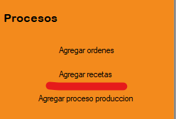
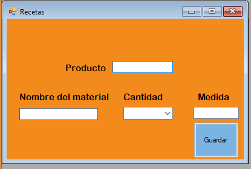

El proceso de vehículos tiene como objetivo registrar una nueva receta al sistema. Para ello debemos dirigirnos al menú de Procesos y luego seleccionamos la opción Agregar recetas.
En la siguiente Figura podremos observar el Formulario que debemos llenar.
